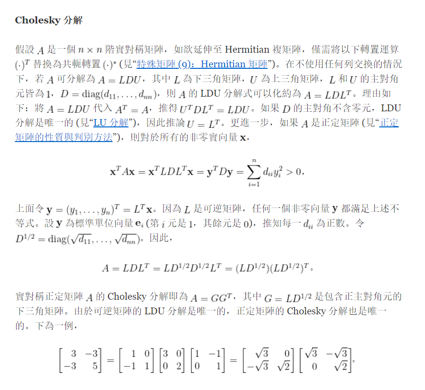

<!DOCTYPE html>


<html lang="zh-CN">


<head>
  <meta name="baidu-site-verification" content="codeva-NSg7ynviLa" />
  <meta charset="utf-8" />
    
  <meta name="viewport" content="width=device-width, initial-scale=1, maximum-scale=1" />
  <title>
    矩阵分解 |  
  </title>
  <meta name="generator" content="hexo-theme-ayer">
  
  <link rel="shortcut icon" href="/images/mojie.jpg" />
  
  
<link rel="stylesheet" href="/dist/main.css">

  <link rel="stylesheet" href="https://cdn.jsdelivr.net/gh/Shen-Yu/cdn/css/remixicon.min.css">
  
<link rel="stylesheet" href="/css/custom.css">

  
  <script src="https://cdn.jsdelivr.net/npm/pace-js@1.0.2/pace.min.js"></script>
  
  

  

<link rel="alternate" href="/atom.xml" title="null" type="application/atom+xml">
</head>

</html>

<body>
  <div id="app">
    
      
    <main class="content on">
      <section class="outer">
  <article
  id="post-矩阵分解"
  class="article article-type-post"
  itemscope
  itemprop="blogPost"
  data-scroll-reveal
>
  <div class="article-inner">
    
    <header class="article-header">
       
<h1 class="article-title sea-center" style="border-left:0" itemprop="name">
  矩阵分解
</h1>
 

    </header>
     
    <div class="article-meta">
      <a href="/posts/46823193/" class="article-date">
  <time datetime="2022-06-03T02:51:57.000Z" itemprop="datePublished">2022-06-03</time>
</a> 
  <div class="article-category">
    <a class="article-category-link" href="/categories/%E7%90%86%E8%AE%BA%E5%AD%A6%E4%B9%A0/">理论学习</a> / <a class="article-category-link" href="/categories/%E7%90%86%E8%AE%BA%E5%AD%A6%E4%B9%A0/%E7%BA%BF%E6%80%A7%E4%BB%A3%E6%95%B0/">线性代数</a>
  </div>
  
<div class="word_count">
    <span class="post-time">
        <span class="post-meta-item-icon">
            <i class="ri-quill-pen-line"></i>
            <span class="post-meta-item-text"> 字数统计:</span>
            <span class="post-count">2k</span>
        </span>
    </span>

    <span class="post-time">
        &nbsp; | &nbsp;
        <span class="post-meta-item-icon">
            <i class="ri-book-open-line"></i>
            <span class="post-meta-item-text"> 阅读时长≈</span>
            <span class="post-count">6 分钟</span>
        </span>
    </span>
</div>
 
    </div>
      
    <div class="tocbot"></div>


  
    <div class="article-entry" itemprop="articleBody">
       
  <link rel="stylesheet" type="text/css" href="https://cdn.jsdelivr.net/hint.css/2.4.1/hint.min.css"><p>矩阵分解，就是将一个矩阵分解为比较简单或性质较好的几个矩阵的乘积。</p>
<span id="more"></span>
<h1>半正定矩阵的平方</h1>
<p>设  为半正定 (正定) 矩阵，则存在<strong>唯一</strong>半正定 (正定) 矩阵  ，使得</p>
<p style=""></p><p>反过来，我们称矩阵  为  的平方根，记为  。</p>
<p><strong>证明</strong>： 设  为  的半正定 (正定) 矩阵，其可对角化为</p>
<p style=""></p><p>其中  为   的特征值，令</p>
<p style=""></p><p>显然， 且 $\mathbf{B}^{2} = \mathbf{A} $ 。</p>
<p>下面我们证明唯一性，假设存在另外一个 Hermite 矩阵  且 $\mathbf{C}^{2} = \mathbf{A} $ ，那么假设   可对角化为下式，其中 </p>
<p style=""></p><p>并且我们有</p>
<p style=""></p><p>故  为  的特征值，因此  ，于是</p>
<p style=""></p><p>再由  得到</p>
<p style=""></p><p>等价地</p>
<p style=""></p><p>记  ，即其元素为  。根据矩阵乘积的法则 (  等于  的第  行乘以  的第  列  )，左右两边元素相等，得到</p>
<p style=""></p><p>因而当  时，必有  。因此无论    和   是否相等，我们总有</p>
<p style=""></p><p>也就是</p>
<p style=""></p><p>等价于</p>
<p style=""></p><p>即</p>
<p style=""></p><p>因此唯一性得证，定理证毕。</p>
<h1>奇异值分解</h1>
<p>对于任意  秩为  的矩阵  ，其均存在奇异值分解形式  ，其中  和  分别为  和  的酉 (正交) 矩阵，$\mathbf{\Sigma} = \mathrm{diag}(\lambda_{1},\cdots, \lambda_{r}) $ 为  的对角矩阵,   。</p>
<p><strong>证明</strong>：我们知道  ，因此其特征值均为非负数，假设其正特征值为  ，因此其可以对角化为</p>
<p style=""></p><p>其中   ，记  ，因此上式变为</p>
<p style=""></p><p>这表明  的  个列互相正交，且前  个列向量长度分别为   (  ) ，后  列均为  向量。</p>
<p>于是，存在一个酉矩阵  ，可以将    表示为</p>
<p style=""></p><p>于是我们得证  ，因此得证。</p>
<h2 id="性质">性质</h2>
<p>根据证明过程，我们知道  是  的特征向量组成的矩阵， 为   的特征值。</p>
<p>同理，根据下式我们可得，</p>
<p style=""></p><p>因为，我们知道  的列是  的特征向量 ， 为   的特征值。</p>
<p> 称为 矩阵  的<strong>奇异值</strong>，奇异值是<strong>唯一的</strong>，但是   和  不唯一。 矩阵  的秩等于非零奇异值的数目，证明很简单，由于  和  均为满秩矩阵，因此  。</p>
<p>当 矩阵  的秩序为  ，设  ，  ，则  ，证明如下</p>
<p style=""></p><h1>极分解</h1>
<p>设  为  的方阵，则存在  的酉矩阵  和  的半正定矩阵  ，使得</p>
<p style=""></p><p>若  可逆，则这种分解是<strong>唯一</strong>的。</p>
<p><strong>证明</strong>：对  进行奇异值分解得到  ，稍做转换得到</p>
<p style=""></p><p>其中</p>
<p style=""></p><p style=""></p><p>其中  为酉矩阵，得证存在性。</p>
<p>下面我们证明  可逆时极分解的唯一性，假设  ，其中   和     为酉矩阵，  和   皆正定（因为 $r\left( \mathbf{A} \right) = r\left( \mathbf{SU} \right) \leq r\left( \mathbf{S} \right) $ 。</p>
<p>并且我们有   ，我们知道   和   均为半正定矩阵   的平方根矩阵，我们已知半正定矩阵的平方根矩阵是唯一的，因此   。同时我们有</p>
<p style=""></p><p>得证唯一性，证明完毕。</p>
<h1>Schur 酉三角分解</h1>
<p>设  为复方矩阵，则存在酉矩阵  ，使得</p>
<p style=""></p><p>其中  为上 (或下) 三角矩阵，其对角元素为  的特征值。</p>
<p>若   为实方阵且特征值均是实数，则  为正交矩阵。</p>
<p><strong>证明</strong>：对  的阶数采用数学归纳法证明，对  ，命题显然成立（ ，其实 从  开始更好理解 ）。</p>
<p>现在假设命题对  的方阵成立，设   为  阶方阵，其特征值为  ，令  为相对于  的<strong>单位</strong>特征向量，我们可以得到一组包含  的  的一组基，利用格拉姆-施密特正交化过程，将这些向量转化为一组标准正交基， ，定义酉矩阵  ，则</p>
<p style=""></p><p>其中第一列为   ，即第一列第一个元素为  ，其他元素为 0 。</p>
<p>其中  为  的方阵，由于  和   相似，因此特征值相同，因此   的特征值为   。由于我们假设命题对  的方阵成立，因此存在  阶的酉矩阵  ，使得</p>
<p style=""></p><p>这里  为上三角矩阵，其对角元素为   的特征值  ，令</p>
<p style=""></p><p>我们有下式成立，因此  为酉矩阵</p>
<p style=""></p><p>同时我们有</p>
<p style=""></p><p>因此，我们证明了  为上三角矩阵的情形。若对  进行上面的分解，则有  ，此时则有   ，因此同样可以分解为下三角矩阵的情况。</p>
<p>最后看  为实方阵且特征值均是实数的情况，此时它的特征向量都可以取为实向量。简单证明一下若   为实方阵且特征值均是实数，则它的特征向量都可以取为实向量。第一种是  ，此时特征向量就是在实矩阵的零空间中，因此显然其可以为实向量；第二种是假设特征值  存在一个复特征向量  ，则  ，共轭得到    ，即  和  也是一组特征值和特征向量，两个方程相加得到  ，因此我们一定可以找到一个实特折向量  。</p>
<p>然后我们同样采用上面的归纳法证明，只是此时  ，  需要替换为正交矩阵，证明略。</p>
<h1>满秩分解</h1>
<p>对于任意  秩为  的矩阵  ，则存在  和  且秩皆为  的矩阵  和  ，使得  。</p>
<p><strong>证明</strong>：设 矩阵  的相抵标准形如下，其中   和   为   和   的可逆矩阵</p>
<p style=""></p><p>对  和   进行分块，得到</p>
<p style=""></p><p>其中    和   分别为   和   的列 (行) 满秩矩阵，我们有</p>
<p style=""></p><p>证明完毕。</p>
<h1>QR 分解</h1>
<p>对于任意  秩为  的满列秩矩阵  ，则存在  矩阵  和  上三角矩阵  ，使得  。其中  ,     的对角元素为正数。如果  为实矩阵，则   和   也是实矩阵。</p>
<p><strong>证明</strong>：对矩阵  施加施密特正交化，便可以得到主要结论。</p>
<p><strong>注</strong>: 如果矩阵  不满秩，其秩为  ，此时   仍然成立，且   ,  但此时   的对角元素可以为零。</p>
<h1>Cholesky 分解</h1>
<p>设矩阵  为  的<strong>正定</strong>矩阵，则存在上三角矩阵  ，其对角线元素均为正数，使得  。</p>
<p>若  为实矩阵，则   的元素均为实数。</p>
<p><strong>证明</strong>：因为  ，故存在   ，使得  ，对  作 QR 分解，有  ,这里   为酉矩阵，  为上三角矩阵，其对角元素阶为正数。于是</p>
<p style=""></p><p>得证。</p>
<p>更详细的内容可见 <a target="_blank" rel="noopener" href="https://ccjou.wordpress.com/2010/09/16/cholesky-%E5%88%86%E8%A7%A3/">Cholesky 分解</a> 。</p>
<p></p>
<h1>谱分解</h1>
<p>若  为  的 Hermite 矩阵，则存在一个酉矩阵对角化  ，即下式成立。其中  为由  矩阵特征值组成的对角矩阵，其元素均为实数； 矩阵的列均为  矩阵 的特征向量。</p>
<p style=""></p><p>当  为实对称矩阵时， 矩阵为正交矩阵。</p>
<p><strong>证明</strong>：根据 Schur 酉三角分解易得</p>
<p style=""></p><p>即  ，左乘  ，右乘  后得到</p>
<p style=""></p><p>因此  为对角矩阵，即  。</p>
<p>下面证明 Hermite 矩阵的特征值均为实数，对  进行共轭转置得到  ，右乘  得到</p>
<p style=""></p><p>得证 Hermite 矩阵的特征值均为实数。</p>
<p>当  为实对称矩阵时，同样根据 Schur 酉三角分解，易得此时  矩阵为正交矩阵。</p>
<h2 id="正规矩阵">正规矩阵</h2>
<p>若  的方阵  满足  ，则称为<strong>正规矩阵</strong> (normal matrix) 。</p>
<p><strong>定理</strong>：一个方阵  是正规矩阵，<strong>当且仅当</strong>方阵  可以找到一组彼此正交的特征向量集。</p>
<p>首先证明<strong>充分性</strong>，假设  可以找到一组彼此正交的特征向量集， 那么其可以对角化为  ，注意其特征值不一定均为实数，即  是一个复矩阵。此时我们有</p>
<p style=""></p><p>容易证明  ，其对角线元素为  ，非对角线元素均为 0 。</p>
<p>因此   ，得证。</p>
<p>再证明<strong>必要性</strong>，根据 Schur 酉三角分解，有  ， 为上三角矩阵。因为   ，我们可以证明  也是正规矩阵，即  ，如下</p>
<p style=""></p><p>得证  ，比较  和   对角线元素得到</p>
<p style=""></p><p>根据第一个方程我们得到  ，其余方程同理，我们得到结论   矩阵非对角线元素均为0，即   为对角矩阵，因此我们有   ，得证   可以找到一组彼此正交的特征向量集。</p>
<h1>参考文献</h1>
<ol>
<li>
<p>Rencher A C, Schaalje G B. Linear models in statistics[M]. John Wiley &amp; Sons, 2008.</p>
</li>
<li>
<p>王松桂, 杨振海. 广义逆矩阵及其应用[M]. 北京工业大学出版社, 1996.</p>
</li>
<li>
<p>Leon S J, Bica I, Hohn T. Linear algebra with applications[M]. Upper Saddle River, NJ: Pearson Prentice Hall, 2006.</p>
</li>
<li>
<p><a target="_blank" rel="noopener" href="https://ccjou.wordpress.com/2010/09/16/cholesky-%E5%88%86%E8%A7%A3/">Cholesky 分解</a></p>
</li>
</ol>
 
      <!-- reward -->
      
    </div>
    

    <!-- copyright -->
    
    <div class="declare">
      <ul class="post-copyright">
        <li>
          <i class="ri-copyright-line"></i>
          <strong>版权声明： </strong>
          
          本博客所有文章除特别声明外，著作权归作者所有。转载请注明出处！
          
        </li>
      </ul>
    </div>
    
    <footer class="article-footer">
       
  <ul class="article-tag-list" itemprop="keywords"><li class="article-tag-list-item"><a class="article-tag-list-link" href="/tags/%E7%90%86%E8%AE%BA%E5%AD%A6%E4%B9%A0/" rel="tag">理论学习</a></li><li class="article-tag-list-item"><a class="article-tag-list-link" href="/tags/%E7%BA%BF%E6%80%A7%E4%BB%A3%E6%95%B0/" rel="tag">线性代数</a></li></ul>

    </footer>
  </div>

   
  <nav class="article-nav">
    
      <a href="/posts/1c2f25ac/" class="article-nav-link">
        <strong class="article-nav-caption">上一篇</strong>
        <div class="article-nav-title">
          
            不满秩的线性回归模型的参数估计
          
        </div>
      </a>
    
    
      <a href="/posts/a67ad139/" class="article-nav-link">
        <strong class="article-nav-caption">下一篇</strong>
        <div class="article-nav-title">方阵的秩等于非零特征值的数目吗</div>
      </a>
    
  </nav>

   
<!-- valine评论 -->
<div id="vcomments-box">
  <div id="vcomments"></div>
</div>
<script src="//cdn1.lncld.net/static/js/3.0.4/av-min.js"></script>
<script src="https://cdn.jsdelivr.net/npm/valine@1.4.14/dist/Valine.min.js"></script>
<script>
  new Valine({
    el: "#vcomments",
    app_id: "yHN3kf7fHt5wvleM2DVoHLdY-gzGzoHsz",
    app_key: "RPIwmdftljIzOtAULwc7JCAp",
    path: window.location.pathname,
    avatar: "monsterid",
    placeholder: "靓仔，看完留个评论再走哇！\n只需要填入昵称和邮箱就可以了",
    recordIP: true,
  });
  const infoEle = document.querySelector("#vcomments .info");
  if (infoEle && infoEle.childNodes && infoEle.childNodes.length > 0) {
    infoEle.childNodes.forEach(function (item) {
      item.parentNode.removeChild(item);
    });
  }
</script>
<style>
  #vcomments-box {
    padding: 5px 30px;
  }

  @media screen and (max-width: 800px) {
    #vcomments-box {
      padding: 5px 0px;
    }
  }

  #vcomments-box #vcomments {
    background-color: #fff;
  }

  .v .vlist .vcard .vh {
    padding-right: 20px;
  }

  .v .vlist .vcard {
    padding-left: 10px;
  }
</style>

 
   
     
</article>

</section>
      <footer class="footer">
  <div class="outer">
    <ul>
      <li>
        Copyrights &copy;
        2019-2023
        <i class="ri-heart-fill heart_icon"></i> Vincere Zhou
      </li>
    </ul>
    <ul>
      <li>
        
        
        <span>
  <span><i class="ri-user-3-fill"></i>访问人数:<span id="busuanzi_value_site_uv"></span></s>
  <span class="division">|</span>
  <span><i class="ri-eye-fill"></i>浏览次数:<span id="busuanzi_value_page_pv"></span></span>
</span>
        
      </li>
    </ul>
    <ul>
      
    </ul>
    <ul>
      
    </ul>
    <ul>
      <li>
        <!-- cnzz统计 -->
        
      </li>
    </ul>

    <!-- 与只只在一起天数 -->
	<ul>
		<li><span id="lovetime_span"></span></li>
	</ul>
    <script type="text/javascript">			
        function show_runtime() {
            window.setTimeout("show_runtime()", 1000);
            X = new Date("03/04/2021 22:11:00");
            Y = new Date();
            T = (Y.getTime() - X.getTime());
            M = 24 * 60 * 60 * 1000;
            a = T / M;
            A = Math.floor(a);
            b = (a - A) * 24;
            B = Math.floor(b);
            c = (b - B) * 60;
            C = Math.floor((b - B) * 60);
            D = Math.floor((c - C) * 60);
            lovetime_span.innerHTML = "只只和男朋友在一起了 " + A + "天" + B + "小时" + C + "分" + D + "秒"
        }
        show_runtime();
    </script>

  </div>
</footer>
      <div class="float_btns">
        <div class="totop" id="totop">
  <i class="ri-arrow-up-line"></i>
</div>

      </div>
    </main>
    <aside class="sidebar on">
      <button class="navbar-toggle"></button>
<nav class="navbar">
  
  <div class="logo">
    <a href="/"></a>
  </div>
  
  <ul class="nav nav-main">
    
    <li class="nav-item">
      <a class="nav-item-link" href="/">主页</a>
    </li>
    
    <li class="nav-item">
      <a class="nav-item-link" href="/archives">归档</a>
    </li>
    
    <li class="nav-item">
      <a class="nav-item-link" href="/categories">分类</a>
    </li>
    
    <li class="nav-item">
      <a class="nav-item-link" href="/tags">标签</a>
    </li>
    
    <li class="nav-item">
      <a class="nav-item-link" href="/friends">友链</a>
    </li>
    
    <li class="nav-item">
      <a class="nav-item-link" href="/about">关于</a>
    </li>
    
  </ul>
</nav>
<nav class="navbar navbar-bottom">
  <ul class="nav">
    <li class="nav-item">
      
      <a class="nav-item-link nav-item-search"  title="搜索">
        <i class="ri-search-line"></i>
      </a>
      
      
      <a class="nav-item-link" target="_blank" href="/atom.xml" title="RSS Feed">
        <i class="ri-rss-line"></i>
      </a>
      
    </li>
  </ul>
</nav>
<div class="search-form-wrap">
  <div class="local-search local-search-plugin">
  <input type="search" id="local-search-input" class="local-search-input" placeholder="Search...">
  <div id="local-search-result" class="local-search-result"></div>
</div>
</div>
    </aside>
    <script>
      if (window.matchMedia("(max-width: 768px)").matches) {
        document.querySelector('.content').classList.remove('on');
        document.querySelector('.sidebar').classList.remove('on');
      }
    </script>
    <div id="mask"></div>

<!-- #reward -->
<div id="reward">
  <span class="close"><i class="ri-close-line"></i></span>
  <p class="reward-p"><i class="ri-cup-line"></i>请我喝杯茶吧~</p>
  <div class="reward-box">
    
    <div class="reward-item">
      
      <span class="reward-type">支付宝</span>
    </div>
    
    
    <div class="reward-item">
      
      <span class="reward-type">微信</span>
    </div>
    
  </div>
</div>
    
<script src="/js/jquery-2.0.3.min.js"></script>


<script src="/js/lazyload.min.js"></script>

<!-- Tocbot -->


<script src="/js/tocbot.min.js"></script>

<script>
  tocbot.init({
    tocSelector: '.tocbot',
    contentSelector: '.article-entry',
    headingSelector: 'h1, h2, h3, h4, h5, h6',
    hasInnerContainers: true,
    scrollSmooth: true,
    scrollContainer: 'main',
    positionFixedSelector: '.tocbot',
    positionFixedClass: 'is-position-fixed',
    fixedSidebarOffset: 'auto'
  });
</script>

<script src="https://cdn.jsdelivr.net/npm/jquery-modal@0.9.2/jquery.modal.min.js"></script>
<link rel="stylesheet" href="https://cdn.jsdelivr.net/npm/jquery-modal@0.9.2/jquery.modal.min.css">
<script src="https://cdn.jsdelivr.net/npm/justifiedGallery@3.7.0/dist/js/jquery.justifiedGallery.min.js"></script>

<script src="/dist/main.js"></script>

<!-- ImageViewer -->

<!-- Root element of PhotoSwipe. Must have class pswp. -->
<div class="pswp" tabindex="-1" role="dialog" aria-hidden="true">

    <!-- Background of PhotoSwipe. 
         It's a separate element as animating opacity is faster than rgba(). -->
    <div class="pswp__bg"></div>

    <!-- Slides wrapper with overflow:hidden. -->
    <div class="pswp__scroll-wrap">

        <!-- Container that holds slides. 
            PhotoSwipe keeps only 3 of them in the DOM to save memory.
            Don't modify these 3 pswp__item elements, data is added later on. -->
        <div class="pswp__container">
            <div class="pswp__item"></div>
            <div class="pswp__item"></div>
            <div class="pswp__item"></div>
        </div>

        <!-- Default (PhotoSwipeUI_Default) interface on top of sliding area. Can be changed. -->
        <div class="pswp__ui pswp__ui--hidden">

            <div class="pswp__top-bar">

                <!--  Controls are self-explanatory. Order can be changed. -->

                <div class="pswp__counter"></div>

                <button class="pswp__button pswp__button--close" title="Close (Esc)"></button>

                <button class="pswp__button pswp__button--share" style="display:none" title="Share"></button>

                <button class="pswp__button pswp__button--fs" title="Toggle fullscreen"></button>

                <button class="pswp__button pswp__button--zoom" title="Zoom in/out"></button>

                <!-- Preloader demo http://codepen.io/dimsemenov/pen/yyBWoR -->
                <!-- element will get class pswp__preloader--active when preloader is running -->
                <div class="pswp__preloader">
                    <div class="pswp__preloader__icn">
                        <div class="pswp__preloader__cut">
                            <div class="pswp__preloader__donut"></div>
                        </div>
                    </div>
                </div>
            </div>

            <div class="pswp__share-modal pswp__share-modal--hidden pswp__single-tap">
                <div class="pswp__share-tooltip"></div>
            </div>

            <button class="pswp__button pswp__button--arrow--left" title="Previous (arrow left)">
            </button>

            <button class="pswp__button pswp__button--arrow--right" title="Next (arrow right)">
            </button>

            <div class="pswp__caption">
                <div class="pswp__caption__center"></div>
            </div>

        </div>

    </div>

</div>

<link rel="stylesheet" href="https://cdn.jsdelivr.net/npm/photoswipe@4.1.3/dist/photoswipe.min.css">
<link rel="stylesheet" href="https://cdn.jsdelivr.net/npm/photoswipe@4.1.3/dist/default-skin/default-skin.min.css">
<script src="https://cdn.jsdelivr.net/npm/photoswipe@4.1.3/dist/photoswipe.min.js"></script>
<script src="https://cdn.jsdelivr.net/npm/photoswipe@4.1.3/dist/photoswipe-ui-default.min.js"></script>

<script>
    function viewer_init() {
        let pswpElement = document.querySelectorAll('.pswp')[0];
        let $imgArr = document.querySelectorAll(('.article-entry img:not(.reward-img)'))

        $imgArr.forEach(($em, i) => {
            $em.onclick = () => {
                // slider展开状态
                // todo: 这样不好，后面改成状态
                if (document.querySelector('.left-col.show')) return
                let items = []
                $imgArr.forEach(($em2, i2) => {
                    let img = $em2.getAttribute('data-idx', i2)
                    let src = $em2.getAttribute('data-target') || $em2.getAttribute('src')
                    let title = $em2.getAttribute('alt')
                    // 获得原图尺寸
                    const image = new Image()
                    image.src = src
                    items.push({
                        src: src,
                        w: image.width || $em2.width,
                        h: image.height || $em2.height,
                        title: title
                    })
                })
                var gallery = new PhotoSwipe(pswpElement, PhotoSwipeUI_Default, items, {
                    index: parseInt(i)
                });
                gallery.init()
            }
        })
    }
    viewer_init()
</script>

<!-- MathJax -->

<script type="text/x-mathjax-config">
  MathJax.Hub.Config({
      tex2jax: {
          inlineMath: [ ['$','$'], ["\\(","\\)"]  ],
          processEscapes: true,
          skipTags: ['script', 'noscript', 'style', 'textarea', 'pre', 'code']
      }
  });

  MathJax.Hub.Queue(function() {
      var all = MathJax.Hub.getAllJax(), i;
      for(i=0; i < all.length; i += 1) {
          all[i].SourceElement().parentNode.className += ' has-jax';
      }
  });
</script>

<script src="https://cdn.jsdelivr.net/npm/mathjax@2.7.6/unpacked/MathJax.js?config=TeX-AMS-MML_HTMLorMML"></script>
<script>
  var ayerConfig = {
    mathjax: true
  }
</script>

<!-- Katex -->

<!-- busuanzi  -->


<script src="/js/busuanzi-2.3.pure.min.js"></script>


<!-- ClickLove -->

<!-- ClickBoom1 -->

<!-- ClickBoom2 -->

<!-- CodeCopy -->


<link rel="stylesheet" href="/css/clipboard.css">

<script src="https://cdn.jsdelivr.net/npm/clipboard@2/dist/clipboard.min.js"></script>
<script>
  function wait(callback, seconds) {
    var timelag = null;
    timelag = window.setTimeout(callback, seconds);
  }
  !function (e, t, a) {
    var initCopyCode = function(){
      var copyHtml = '';
      copyHtml += '<button class="btn-copy" data-clipboard-snippet="">';
      copyHtml += '<i class="ri-file-copy-2-line"></i><span>COPY</span>';
      copyHtml += '</button>';
      $(".highlight .code pre").before(copyHtml);
      $(".article pre code").before(copyHtml);
      var clipboard = new ClipboardJS('.btn-copy', {
        target: function(trigger) {
          return trigger.nextElementSibling;
        }
      });
      clipboard.on('success', function(e) {
        let $btn = $(e.trigger);
        $btn.addClass('copied');
        let $icon = $($btn.find('i'));
        $icon.removeClass('ri-file-copy-2-line');
        $icon.addClass('ri-checkbox-circle-line');
        let $span = $($btn.find('span'));
        $span[0].innerText = 'COPIED';
        
        wait(function () { // 等待两秒钟后恢复
          $icon.removeClass('ri-checkbox-circle-line');
          $icon.addClass('ri-file-copy-2-line');
          $span[0].innerText = 'COPY';
        }, 2000);
      });
      clipboard.on('error', function(e) {
        e.clearSelection();
        let $btn = $(e.trigger);
        $btn.addClass('copy-failed');
        let $icon = $($btn.find('i'));
        $icon.removeClass('ri-file-copy-2-line');
        $icon.addClass('ri-time-line');
        let $span = $($btn.find('span'));
        $span[0].innerText = 'COPY FAILED';
        
        wait(function () { // 等待两秒钟后恢复
          $icon.removeClass('ri-time-line');
          $icon.addClass('ri-file-copy-2-line');
          $span[0].innerText = 'COPY';
        }, 2000);
      });
    }
    initCopyCode();
  }(window, document);
</script>


<!-- CanvasBackground -->


    
  </div>
<script src="/live2dw/lib/L2Dwidget.min.js?094cbace49a39548bed64abff5988b05"></script><script>L2Dwidget.init({"pluginRootPath":"live2dw/","pluginJsPath":"lib/","pluginModelPath":"assets/","tagMode":false,"debug":false,"model":{"jsonPath":"/live2dw/assets/wanko.model.json"},"display":{"position":"right","width":150,"height":300,"hOffset":80,"vOffset":-70},"mobile":{"show":false,"scale":0.5},"log":false});</script></body>

</html>